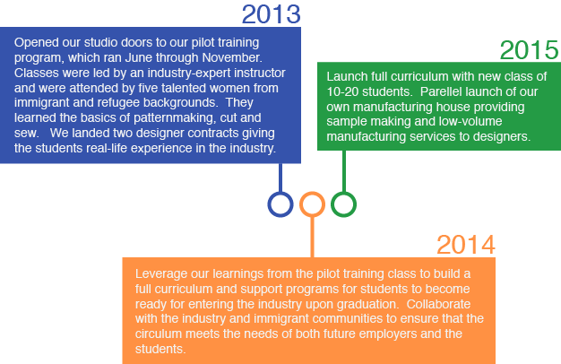

Our Mission: Muses is a non-profit equipping low-income immigrants and refugees with skills and ethical job opportunities in apparel production, while increasing fashion designers' access to high-quality, local, and responsible manufacturing services.
Muses builds financial stability and social integration for low-income immigrants and refugees through hands-on training in apparel production skills increasingly demanded by the fashion industry locally and nationally. We then connect them to job opportunities, including our own apparel production house specializing in low volume and responsible manufacturing.
The fashion industry is experiencing a surging demand for "Made in the USA" and ethically produced apparel, leaving designers and manufacturers struggling to find qualified workers as apparel manufacturing jobs were largely exported in the 1970s. We have found that many immigrants and refugees have existing skills and talents in apparel production that can be elevated and focused to match the needs of the industry.
Innovatively merging a social need and market demand, Muses capitalizes on this opportunity to bring low-income immigrants and refugees from the margins of our economy to the forefront of the movement for locally manufactured apparel and the cutting edge of conscious fashion.
We aspire to revive the fine art of creating high-quality and handcrafted garment. We envision a sustainable future as a leading local apparel production house which equips our students with the skills and opportunities to become self-sufficient. Joining together with immigrant and refugee communities, fashion designers and manufacturers, and conscious consumers, we aim to embrace slow fashion values around high-quality and responsibly made apparel.
